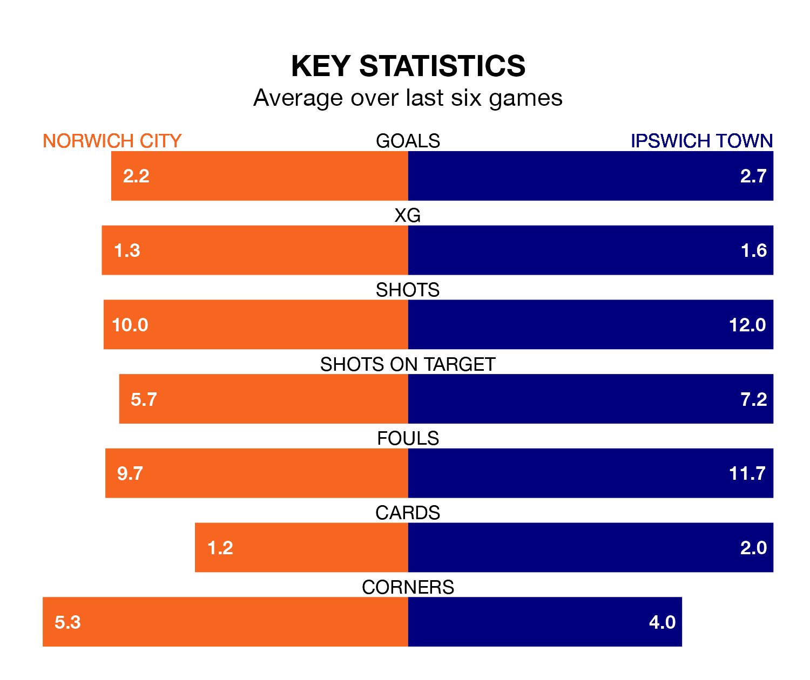

Ipswich Town visit Norwich City at Carrow Road on Saturday lunchtime on the back of three consecutive wins in EFL Championship.
Ipswich have picked up 15 points from their last six games, and they face a Canaries side who lost their last match, and have collected 12 points from the last possible 18.
With 84 goals in 40 games so far this season, Ipswich are the league's highest scorers with 2.1 goals per game. And they are conceding fewer than average, letting in 51 goals at a rate of 1.3 per game.
Norwich are also above average scorers, with 1.8 goals per game, compared to a league average of 1.4. They have conceded 1.4 goals per game.
Town are top of the table after 40 games, of which they have won 26 and drawn nine, earning 87 points.
City are five places behind the Blues in sixth, with 19 wins and seven draws putting them on 64 points.
In the last 10 years, Norwich and Ipswich have played each other on 11 occasions. Norwich won five of them and they drew six times.
On average, the Canaries scored 1.5 goals and the Blues 0.7 in those matches.
Their last meeting was on December 16, when they played out a 2-2 draw.
In Václav Hladký, the visitors can rely on one of the league's safest pair of hands. He has kept 13 clean sheets in his 40 appearances this season, and only two other 'keepers – Leeds United's Illan Meslier and West Bromwich Albion's Alex Palmer – have been able to prevent the opposition scoring on more occasions in EFL Championship.
In the Canaries' net, Angus Gunn has nine clean sheets in 34 games. He has conceded a goal every 81 minutes, only slightly more often than the 82 minutes between goals for Hladký.
Norwich's last match was on Monday, a 3-1 loss against Leicester City, with Gabriel Sara getting the goal for the Canaries.
Ipswich beat Southampton 3-2 last time out, also on Monday, with Leif Davis and Nathan Broadhead on the scoresheet.
Saturday's match will be refereed by Matt Donohue, who has taken charge of 26 EFL Championship games so far this season, issuing one red card and booking 112 players. He has awarded four penalties.
The last Norwich game Donohue refereed was a 1-0 away loss to Leeds United on January 24. His last Ipswich match was their 3-0 win at home against Hull City on October 3.
Updated: 16:41 (UTC), 04/04/24